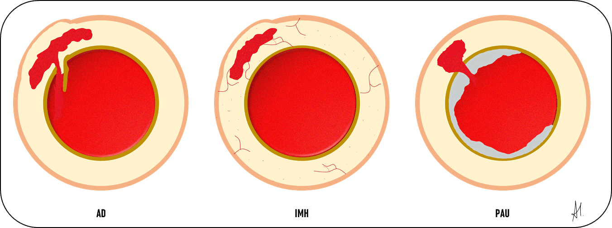
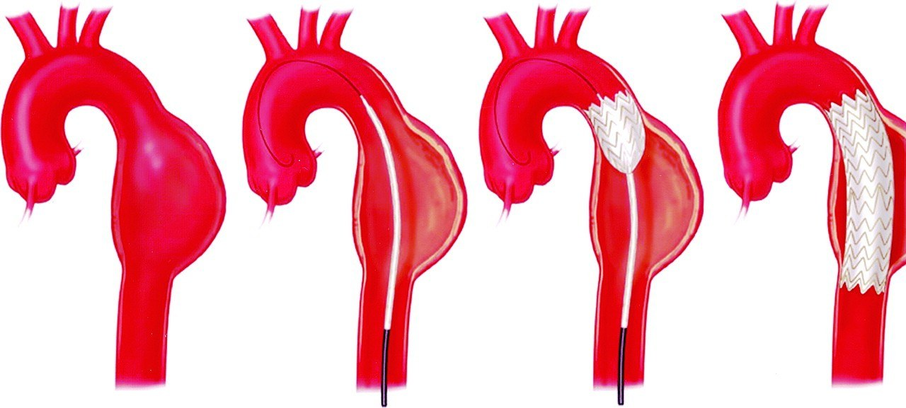
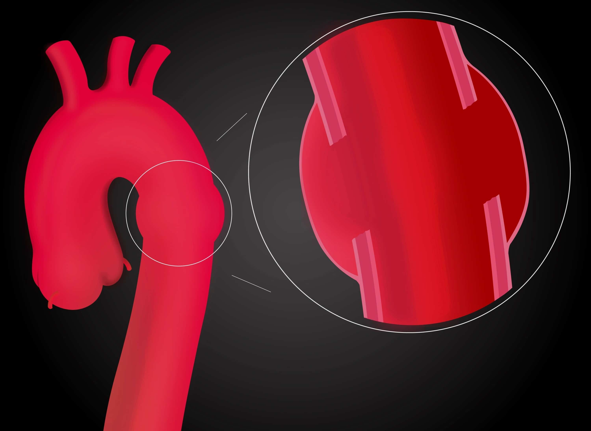
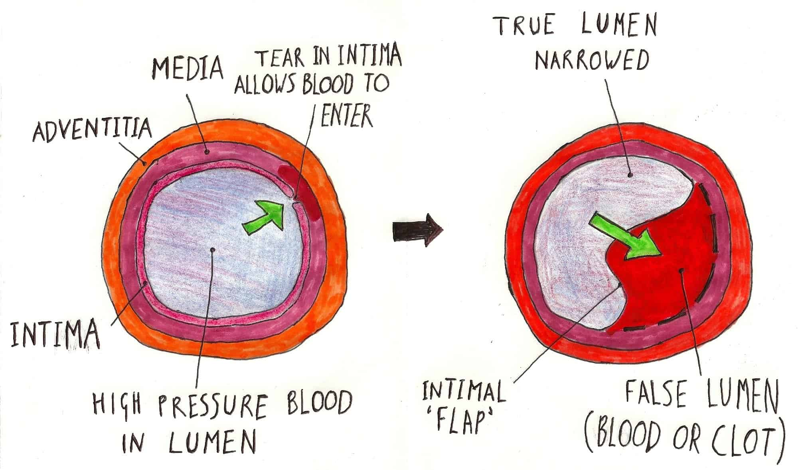
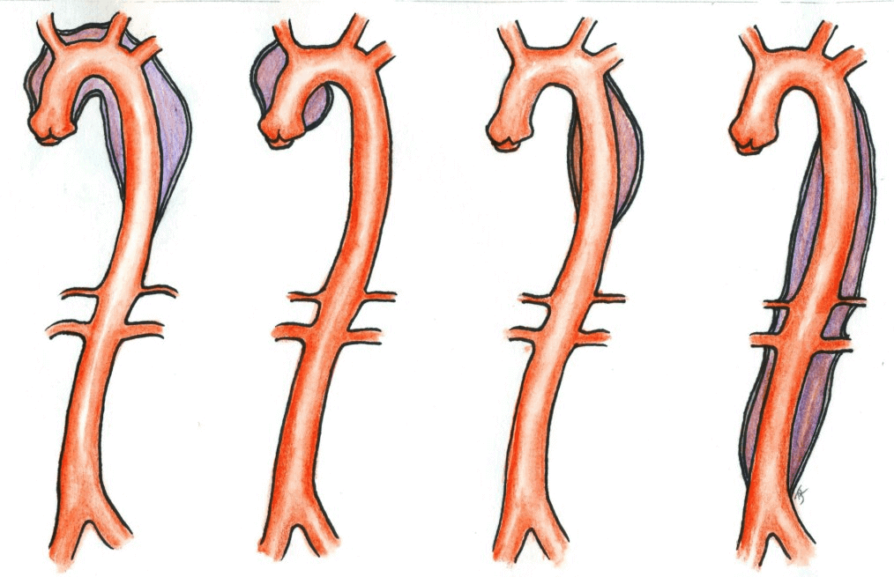
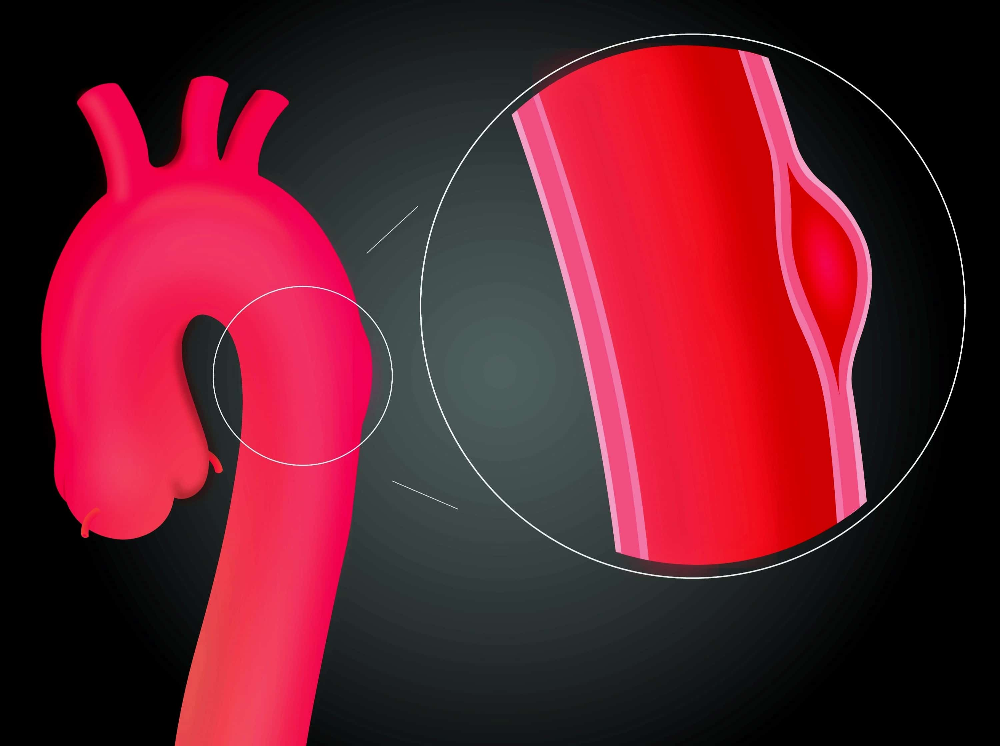
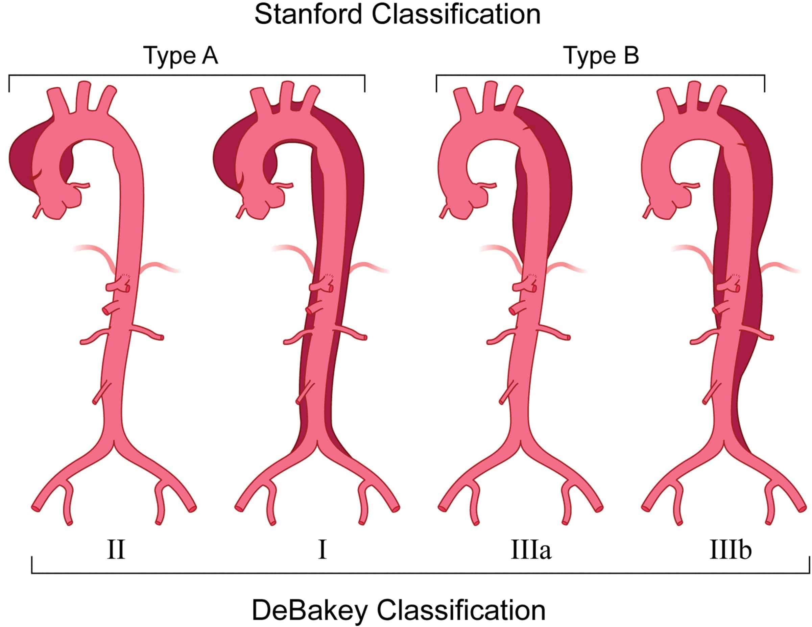
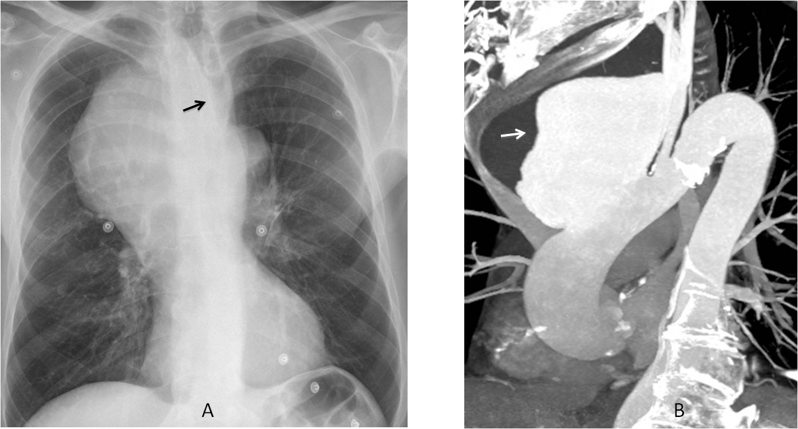

Phình Tách ĐM Chủ Ngực
I. Đại cương
– Bệnh lý động mạch chủ ngực gồm các tổn thương giãn thành mạch và tổn thương cấp của thành mạch:
+ Phình động mạch chủ ngực (thoracic aortic aneurysm) là tình trạng giãn bất thường một đoạn động mạch chủ, thường được xác định khi đường kính đạt ≥ 1,5 lần đường kính dự kiến của đoạn mạch tương ứng.
+ Giả phình động mạch chủ (pseudoaneurysm) hình thành khi thành mạch bị phá vỡ nhưng máu thoát ra được giới hạn bởi mô quanh mạch, không còn được bao bọc đầy đủ bởi thành động mạch.
+ Hội chứng động mạch chủ cấp (acute aortic syndrome) gồm bóc tách động mạch chủ (aortic dissection), tụ máu thành mạch (aortic intramural hematoma) và loét xuyên thành do xơ vữa (penetrating atherosclerotic ulcer); các tổn thương này có nguy cơ tiến triển nhanh, gây vỡ hoặc ảnh hưởng tưới máu cơ quan.
– Dịch tễ: Tổn thương thoái hóa thường gặp ở người cao tuổi và nam giới; bệnh có yếu tố di truyền hoặc liên quan bất thường van động mạch chủ có thể biểu hiện ở tuổi trẻ hơn:
+ Tuổi cao, hút thuốc, tăng huyết áp và xơ vữa động mạch thường đi kèm bệnh lý động mạch chủ thoái hóa.
+ Tiền sử gia đình và các bệnh mô liên kết di truyền làm tăng nguy cơ phình hoặc bóc tách động mạch chủ, kể cả ở người trẻ.
– Căn nguyên: Căn nguyên thay đổi theo vị trí và dạng tổn thương:
+ Thoái hóa thành mạch, xơ vữa và tăng huyết áp thường liên quan đến phình động mạch chủ, đặc biệt ở đoạn xuống.
+ Bệnh mô liên kết di truyền, bất thường van động mạch chủ hai mảnh và tiền sử gia đình có thể gây yếu thành mạch, thường liên quan đến tổn thương đoạn gần.
+ Chấn thương, can thiệp hoặc phẫu thuật có thể gây tổn thương thành mạch và giả phình; nhiễm trùng hoặc viêm động mạch là các nguyên nhân ít gặp hơn.
– Cơ chế bệnh sinh: Yếu thành mạch dẫn đến giãn khu trú hoặc lan tỏa; tổn thương tiến triển có thể gây huyết khối, bóc tách hoặc vỡ:
+ Trong bóc tách, máu đi qua chỗ rách lớp áo trong và tách dọc các lớp thành mạch; tụ máu thành mạch hình thành khi máu tích tụ trong thành mà không thấy đường thông rõ với lòng mạch.
+ Loét xuyên thành do xơ vữa bắt đầu từ mảng xơ vữa, ăn sâu vào thành mạch; các dạng tổn thương cấp này có thể gây vỡ hoặc làm giảm tưới máu các nhánh động mạch chủ.
– Biểu hiện lâm sàng: Phình động mạch chủ có thể không triệu chứng và được phát hiện tình cờ; khi có triệu chứng, biểu hiện phụ thuộc vị trí và biến chứng:
+ Hội chứng động mạch chủ cấp thường gây đau ngực hoặc đau lưng khởi phát đột ngột, dữ dội; đôi khi biểu hiện bằng ngất, dấu thần kinh khu trú hoặc thiếu máu chi, tạng.
+ Hở van động mạch chủ cấp, chèn ép tim, vỡ mạch hoặc thiếu máu cơ quan là các biến chứng đe dọa tính mạng.
– Phân bố: Tổn thương có thể nằm ở động mạch chủ lên, cung động mạch chủ hoặc động mạch chủ xuống; có thể lan dọc động mạch chủ và vào các nhánh, kể cả đoạn bụng. Vị trí và mức độ lan rộng ảnh hưởng đến biến chứng và lựa chọn xử trí.
– Vai trò CĐHA: CĐHA giúp phát hiện, xác định vị trí và phạm vi tổn thương, phân biệt các dạng bệnh lý, đánh giá nhánh mạch và biến chứng, đồng thời hỗ trợ lập kế hoạch điều trị và theo dõi:
+ CT mạch máu thường là phương tiện khảo sát chính khi nghi ngờ hội chứng động mạch chủ cấp ở người bệnh ổn định.
+ Siêu âm tim có thể đánh giá đoạn gần động mạch chủ và các biến chứng tim; siêu âm tim qua thực quản hữu ích khi cần khảo sát tại giường. MRI có thể dùng ở người bệnh ổn định khi cần phương tiện thay thế hoặc theo dõi.

© Chẩn Đoán Hình Ảnh Xray.vn
II. Hình thái tổn thương
1. Phình động mạch
– Phình động mạch chủ ngực (thoracic aortic aneurysm) là tình trạng giãn bất thường một đoạn động mạch chủ, thường được xác định khi đường kính đạt ≥ 1,5 lần đường kính dự kiến của đoạn tương ứng.
– Đặc điểm hình thái: Phình có thể dạng hình thoi, giãn tương đối đều quanh chu vi, hoặc dạng hình túi, lồi khu trú lệch tâm:
+ Dạng hình túi cũng có thể gặp ở giả phình; chỉ dựa vào hình dạng không đủ để phân biệt hai tổn thương.
+ Thành túi phình có thể mỏng đi; ở khối phình lớn, các lớp thành mạch đôi khi không còn phân biệt rõ.
– Biến chứng:
+ Phình động mạch chủ ngực có thể tiến triển, bóc tách hoặc vỡ; khối phình lớn cũng có thể chèn ép cấu trúc lân cận:
+ Nguy cơ vỡ liên quan đến kích thước và tốc độ tăng trưởng của túi phình.

– Nguyên nhân & yếu tố nguy cơ: Các yếu tố liên quan khác nhau theo đoạn động mạch chủ:
+ Phình rễ hoặc động mạch chủ lên thường liên quan đến bệnh lý di truyền như Marfan, Loeys–Dietz, Ehlers–Danlos thể mạch máu, van động mạch chủ hai mảnh và tiền sử gia đình; bệnh có thể xuất hiện ở người trẻ.
+ Phình động mạch chủ xuống thường gắn với thoái hóa và xơ vữa thành mạch; tuổi cao và hút thuốc là những yếu tố nguy cơ quan trọng.
+ Tăng huyết áp làm tăng tải cơ học lên thành mạch và là yếu tố nguy cơ ở nhiều thể; các yếu tố nguy cơ xơ vữa thường nổi bật hơn ở phình đoạn xuống so với phình rễ hoặc đoạn lên.
2. Giả phình
– Giả phình động mạch chủ ngực (aortic pseudoaneurysm) hình thành khi thành mạch bị gián đoạn, máu thoát khỏi lòng mạch nhưng được mô quanh mạch, mô xơ hoặc huyết khối giới hạn. Túi giả phình không được cấu tạo bởi đầy đủ các lớp thành động mạch, thường lồi khu trú dạng hình túi và còn thông với lòng mạch.
– Căn nguyên: Thường do chấn thương, nhiễm trùng hoặc can thiệp, phẫu thuật động mạch chủ:
+ Sau phẫu thuật, giả phình có thể hình thành tại vị trí mở động mạch chủ, đặt canuyn hoặc miệng nối.
+ Nhiễm trùng hoặc viêm thành mạch có thể làm thành mạch yếu và tạo giả phình.
– Biến chứng: Giả phình có thể lớn dần và vỡ tự do; đôi khi hình thành đường rò hoặc bội nhiễm.

3. Bóc tách động mạch
– Bóc tách động mạch chủ (aortic dissection) hình thành khi máu tách dọc lớp áo giữa, tạo lòng giả bên cạnh lòng thật:
+ Thường khởi phát từ vết rách lớp áo trong, cho phép máu từ lòng mạch đi vào lớp áo giữa; đường bóc tách có thể lan dọc động mạch chủ.
+ Lòng thật là phần lòng mạch nguyên thủy; lòng giả là khoang mới hình thành trong thành mạch, thường thông với lòng thật qua một hoặc nhiều chỗ rách.
+ Vạt bóc tách phân cách lòng thật và lòng giả.
– Đặc điểm huyết động: Áp lực trong lòng giả phụ thuộc tương quan giữa dòng máu đi vào và đường thoát lưu. Khi áp lực lòng giả tăng, lòng giả có thể giãn, chèn ép lòng thật hoặc cản trở tưới máu các nhánh động mạch chủ.

– Lòng thật là lòng mạch nguyên thủy, được lót bởi lớp áo trong; lòng giả hình thành trong lớp áo giữa và được ngăn với lòng thật bởi vạt bóc tách:
+ Lòng thật có thể bị chèn ép và nhỏ hơn lòng giả, nhưng tương quan kích thước thay đổi theo mức độ bóc tách.
+ Dòng chảy trong lòng giả thường chậm hơn lòng thật, nhưng thay đổi theo các cửa thông; lòng giả còn được tưới máu có thể giãn dần, không phải lúc nào cũng tiến triển thành phình.
– Lan rộng: Vạt bóc tách có thể lan xuôi dòng hoặc ngược dòng dọc theo động mạch chủ, đôi khi vào các nhánh; không mặc định dừng tại chỗ chia nhánh hoặc mảng xơ vữa.
– Phân loại theo thời gian từ khởi phát triệu chứng:
+ Tối cấp: < 24 giờ.
+ Cấp: 1–14 ngày.
+ Bán cấp: 15–90 ngày.
+ Mạn: > 90 ngày.

– Vị trí rách nội mạc: Vết rách khởi phát thường gặp ở đoạn gần động mạch chủ lên và ở động mạch chủ xuống ngay sau chỗ xuất phát động mạch dưới đòn trái; tuy nhiên, bóc tách có thể bắt đầu ở vị trí khác.
– Biến chứng khi bóc tách ảnh hưởng đến động mạch chủ lên:
+ Vỡ vào màng ngoài tim có thể gây tràn máu màng ngoài tim và chèn ép tim.
+ Lan đến lỗ động mạch vành có thể gây thiếu máu cơ tim hoặc nhồi máu cơ tim.
+ Tổn thương gốc động mạch chủ có thể gây hở van động mạch chủ cấp.
– Nguyên nhân & yếu tố nguy cơ: Bóc tách thường khởi phát do rách lớp áo trong trên nền tăng tải cơ học hoặc thành mạch suy yếu:
+ Tăng huyết áp, tuổi cao và giãn hoặc phình động mạch chủ có sẵn làm tăng nguy cơ tổn thương thành mạch.
+ Bệnh lý mô liên kết di truyền như hội chứng Marfan, Loeys–Dietz và Ehlers–Danlos thể mạch máu làm suy yếu thành động mạch chủ; bệnh có thể khởi phát ở tuổi trẻ.
+ Van động mạch chủ hai mảnh, hẹp eo động mạch chủ và thiểu sản quai động mạch chủ là các bất thường tim mạch liên quan đến nguy cơ bóc tách.
+ Tiền sử phẫu thuật hoặc can thiệp động mạch chủ, gồm đặt canuyn, kẹp mạch, tạo miệng nối hoặc sử dụng dụng cụ trong lòng mạch, có thể gây tổn thương thành mạch.
+ Thai kỳ và giai đoạn hậu sản làm tăng nguy cơ, nhất là khi có bệnh lý động mạch chủ di truyền hoặc giãn động mạch chủ từ trước.
+ Viêm động mạch tế bào khổng lồ và chấn thương ngực mạnh là các nguyên nhân ít gặp hơn.
+ Hội chứng Turner và Noonan có thể đi kèm bệnh lý động mạch chủ.
– Cơ chế bệnh sinh: Bóc tách thường tạo một lòng giả; trong tổn thương phức tạp có thể hình thành nhiều lòng giả.
4. Tụ máu thành mạch
– Tụ máu trong thành động mạch chủ (aortic intramural hematoma, IMH) là máu tụ chủ yếu trong lớp áo giữa, không thấy vạt bóc tách hoặc đường thông rõ với lòng mạch:
+ Cơ chế có thể liên quan đến xuất huyết từ mạch nuôi thành mạch hoặc tổn thương nội mạc nhỏ chưa quan sát được; cơ chế chưa thống nhất.
+ Tổn thương có thể thoái triển hoặc tiến triển thành bóc tách, giả phình hay vỡ.
– Dịch tễ: IMH chiếm khoảng 5–27% hội chứng động mạch chủ cấp:
+ Thể Stanford B ở động mạch chủ xuống thường gặp hơn, chiếm khoảng 60–70%.
+ Bệnh thường gặp ở người lớn tuổi có tăng huyết áp hoặc xơ vữa động mạch.
– Biểu hiện lâm sàng: Triệu chứng có thể gần giống bóc tách động mạch chủ; không thể phân biệt hai tổn thương chỉ dựa vào biểu hiện lâm sàng.

– Phân loại: Tụ máu trong thành động mạch chủ được phân loại theo Stanford dựa trên việc có hay không có tổn thương động mạch chủ lên, tương tự bóc tách động mạch chủ.
– Điều trị: Tụ máu cấp Stanford A thường được ưu tiên phẫu thuật khẩn, nhất là khi có biến chứng hoặc dấu hiệu nguy cơ cao; trường hợp ổn định, không có các dấu hiệu này cần được đánh giá cá thể hóa theo hướng dẫn hiện hành.
5. Loét xơ vữa thành mạch
– Loét xuyên mảng xơ vữa động mạch chủ (penetrating atherosclerotic ulcer, PAU) là ổ loét trên mảng xơ vữa xuyên qua lá chun trong vào lớp áo giữa.
– Biến chứng: Máu có thể thấm vào lớp áo giữa, gây tụ máu trong thành; tổn thương có thể tiến triển thành bóc tách khu trú, giả phình dạng túi hoặc vỡ.
– Phân bố: Thường gặp ở người lớn tuổi có xơ vữa động mạch nặng, chủ yếu tại cung và động mạch chủ xuống; ít gặp ở động mạch chủ lên.
III. Phân loại
* Phân loại De Bakey
– Loại I: Vết rách nội mạc khởi phát ở động mạch chủ lên; bóc tách lan qua cung xuống động mạch chủ xuống và có thể tới động mạch chủ bụng.
– Loại II: Vết rách khởi phát và bóc tách chỉ khu trú ở động mạch chủ lên.
– Loại III: Vết rách khởi phát ở động mạch chủ xuống, thường ngay sau nguyên ủy động mạch dưới đòn trái; bóc tách lan chủ yếu theo hướng xuống.
– Loại IIIa: Bóc tách khu trú trong động mạch chủ ngực, trên cơ hoành.
– Loại IIIb: Bóc tách lan qua cơ hoành xuống động mạch chủ bụng.
* Phân loại Stanford
– Loại A: Bất kỳ bóc tách nào liên quan đến động mạch chủ lên đều thuộc loại A, không phụ thuộc vị trí khởi phát của vết rách.
– Loại B: Không ảnh hưởng động mạch chủ lên; thường có tổn thương động mạch chủ xuống và có thể lan đến động mạch chủ bụng.
– Phân loại bóc tách chỉ khu trú ở cung động mạch chủ: Tùy hệ thống, tổn thương không ảnh hưởng đoạn lên có thể xếp loại B hoặc gọi là không A, không B (non-A non-B).

IV. Giải phẫu
1. Động mạch chủ lên
– Vị trí: Xuất phát từ tâm thất trái, đi lên và chếch sang phải trong trung thất giữa; đoạn lên nằm trong màng ngoài tim, kết thúc ngang mặt phẳng góc ức (T4–T5) và tiếp nối với cung động mạch chủ.
– Kích thước: Động mạch chủ lên dài khoảng 4–5 cm; số liệu giải phẫu trên mẫu người Việt ghi nhận đường kính trung bình khoảng 21,7 mm.
– Liên quan:
+ Đoạn gần nằm sau thân động mạch phổi và trước tiểu nhĩ trái.
+ Đoạn xa nằm trước động mạch phổi phải và phế quản chính phải.
– Đặc điểm hình thái: Đoạn gốc giãn thành các xoang động mạch chủ, tương ứng với các lá van bán nguyệt.
– Nhánh bên: Động mạch vành phải và trái xuất phát lần lượt từ xoang động mạch chủ phải và trái.
2. Cung động mạch chủ
– Vị trí: Tiếp nối động mạch chủ lên, cung cong sang trái và ra sau, lồi lên trên và lõm xuống dưới; cung vắt qua phế quản chính trái, nằm trong trung thất trên và ngang mặt phẳng góc ức (T4–T5).
– Kích thước: Số liệu giải phẫu trên mẫu người Việt ghi nhận đường kính trung bình khoảng 19,1 mm.
– Liên quan:
+ Phía trước: Dây thần kinh hoành trái, dây thần kinh lang thang trái và các nhánh tim của dây thần kinh lang thang trái.
+ Phía sau: Khí quản và thực quản.
+ Phía dưới: Động mạch phổi trái, phế quản chính trái, dây chằng động mạch và dây thần kinh quặt ngược thanh quản trái.
+ Phía trên: Các nhánh của cung động mạch chủ; tĩnh mạch cánh tay đầu trái nằm phía trước các nhánh này.
– Nhánh bên:
+ Thân động mạch cánh tay đầu.
+ Động mạch cảnh chung trái.
+ Động mạch dưới đòn trái.
3. Động mạch chủ xuống
– Vị trí: Bắt đầu sau cung động mạch chủ, ngay dưới nguyên ủy động mạch dưới đòn trái, đi xuống đến chỗ chia đôi động mạch chủ; đường kính thường nhỏ hơn động mạch chủ lên và cung động mạch chủ.
– Eo động mạch chủ: Là đoạn hẹp tương đối ngay sau nguyên ủy động mạch dưới đòn trái, gần dây chằng động mạch; đây là vị trí thường bị tổn thương trong chấn thương giảm tốc mạnh do đoạn mạch tương đối cố định.
– Phân đoạn: Gồm động mạch chủ ngực, từ cung động mạch chủ đến lỗ động mạch chủ của cơ hoành, và động mạch chủ bụng, từ cơ hoành đến chỗ chia đôi.
* Động mạch chủ ngực
– Vị trí: Đoạn ngực của động mạch chủ xuống bắt đầu ở cuối cung động mạch chủ, ngang mặt phẳng góc ức (T4–T5), đi trong trung thất sau; ban đầu nằm bên trái thân đốt sống ngực rồi tiến dần ra trước cột sống. Qua lỗ động mạch chủ của cơ hoành ở T12, mạch tiếp tục thành động mạch chủ bụng.
– Kích thước: Một số liệu giải phẫu trên mẫu người Việt ghi nhận đường kính trung bình khoảng 15,8 mm.
– Liên quan:
+ Phía trước: Cuống phổi trái ở đoạn trên và thực quản ở đoạn dưới.
+ Phía sau: Cột sống ngực.
+ Bên phải: Ống ngực và tĩnh mạch đơn.
+ Bên trái: Tĩnh mạch bán đơn và tĩnh mạch bán đơn phụ.

– Nhánh bên:
+ Các động mạch phế quản thường gồm hai nhánh trái và một nhánh phải; số lượng và nguyên ủy có thể thay đổi. Các nhánh này chạy dọc theo phế quản.
+ Các nhánh trung thất và màng ngoài tim là những nhánh nhỏ cấp máu cho trung thất sau và phần sau màng ngoài tim.
+ Các nhánh thực quản có số lượng thay đổi, cấp máu cho đoạn ngực của thực quản.
+ Các động mạch hoành trên thường xuất phát từ phần dưới động mạch chủ ngực, cấp máu cho mặt trên phần sau cơ hoành.
+ Thường có 9 đôi động mạch gian sườn sau xuất phát từ mặt sau động mạch chủ ngực, đi vào các khoang gian sườn 3–11.
* Động mạch chủ bụng
– Vị trí: Tiếp nối động mạch chủ ngực qua lỗ động mạch chủ của cơ hoành ở mức T12, chạy xuống trước các thân đốt sống thắt lưng trong khoang sau phúc mạc và chia thành hai động mạch chậu chung ở mức L4.
– Liên quan:
+ Phía trước: Được phúc mạc thành sau che phủ; lần lượt liên quan với tụy, tĩnh mạch thận trái bắt chéo trước động mạch chủ, phần ngang tá tràng và rễ mạc treo ruột non.
+ Phía sau: Thân các đốt sống thắt lưng.
+ Phía phải: Tĩnh mạch chủ dưới.
+ Phía trái: Thận trái, tuyến thượng thận trái và thân giao cảm thắt lưng trái.

– Nhánh bên:
+ Hai động mạch hoành dưới thường xuất phát từ đoạn đầu động mạch chủ bụng, gần lỗ động mạch chủ của cơ hoành ở T12; nguyên ủy có thể thay đổi.
+ Thân tạng xuất phát từ mặt trước động mạch chủ bụng, thường ở mức T12–L1; ba nhánh chính là động mạch vị trái, động mạch lách và động mạch gan chung.
+ Động mạch mạc treo tràng trên xuất phát từ mặt trước động mạch chủ bụng ở mức L1, thường cách nguyên ủy thân tạng khoảng 1 cm về phía dưới.
+ Hai động mạch thượng thận giữa xuất phát từ hai bên động mạch chủ, gần mức động mạch mạc treo tràng trên.
+ Hai động mạch thận thường xuất phát từ hai bên động mạch chủ ở mức L1–L2, thấp hơn động mạch mạc treo tràng trên; có thể có động mạch thận phụ.
+ Hai động mạch sinh dục xuất phát từ hai bên động mạch chủ, thường ở dưới động mạch thận và trên động mạch mạc treo tràng dưới.
+ Động mạch mạc treo tràng dưới xuất phát từ mặt trước động mạch chủ bụng, thường ở mức L3.
+ Thường có bốn đôi động mạch thắt lưng xuất phát từ mặt sau động mạch chủ bụng.
+ Động mạch cùng giữa xuất phát từ mặt sau động mạch chủ, gần chỗ chia đôi.
– Nhánh tận:
+ Động mạch chủ bụng thường chia thành hai động mạch chậu chung ở mức L4; mỗi động mạch chậu chung thường không cho nhánh bên lớn trước khi chia.
+ Một số số liệu giải phẫu trên người Việt ghi nhận động mạch chậu chung dài trung bình khoảng 40 mm, đường kính khoảng 7,7 mm.
+ Mỗi động mạch chậu chung chia gần khớp cùng chậu thành động mạch chậu trong và động mạch chậu ngoài.
+ Động mạch chậu ngoài là nguồn cấp máu chính cho chi dưới, tiếp tục thành động mạch đùi sau khi đi dưới dây chằng bẹn.
+ Động mạch chậu trong cấp máu cho các tạng chậu, tầng sinh môn và vùng mông.
V. Chẩn đoán x-quang
– Trung thất giãn rộng: Là dấu hiệu X-quang thường gặp trong phình động mạch chủ ngực và bóc tách động mạch chủ nhưng không đặc hiệu; phim không có dấu hiệu này không loại trừ bóc tách.


=> Case lâm sàng 1:
=> Case lâm sàng 2:
=> Case lâm sàng 3:
– Tăng khoảng cách giữa bờ ngoài khí quản và bờ quai động mạch chủ có thể gợi ý giãn quai; phình quai lớn có thể đẩy khí quản sang phải hoặc chèn ép khí quản.

– Dấu hiệu bóng đôi quai động mạch chủ (double aortic knob sign): Có thể gặp ở khoảng 40% trường hợp.
– Giãn rộng động mạch chủ ngực hoặc đường viền động mạch chủ bất thường: Có thể gợi ý bệnh lý động mạch chủ nhưng không xác định được bóc tách.
– Dấu hiệu vôi hóa: Vôi hóa nội mạc tách khỏi bờ ngoài mô mềm của động mạch chủ > 10 mm là dấu hiệu tương đối đặc hiệu nhưng ít gặp; thường gặp hơn trong bóc tách động mạch chủ xuống.
– Tràn dịch màng phổi: Thường ở bên trái; có thể đi kèm rò hoặc vỡ động mạch chủ nhưng không đặc hiệu.
– Tràn dịch màng ngoài tim: Có thể gặp trong bóc tách động mạch chủ lên; trên X-quang, bóng tim to có thể là dấu hiệu gián tiếp.
– Bóng tim to: Không đặc hiệu; nếu mới xuất hiện có thể liên quan đến tràn dịch màng ngoài tim.
– Lệch ống thông mũi-dạ dày: Có thể phản ánh thực quản bị đẩy lệch do khối phình hoặc giãn rộng trung thất, nhưng không đặc hiệu.
– Giá trị và giới hạn:
+ Phần lớn các dấu hiệu X-quang không đặc hiệu; chúng có thể làm tăng nghi ngờ và thúc đẩy khảo sát chuyên sâu hơn nhưng không xác định được bóc tách.
+ Tăng mỡ trung thất có thể giả rộng trung thất và gây dương tính giả khi đánh giá dấu hiệu này.


=> Case lâm sàng 1:
=> Case lâm sàng 2:

=> Case lâm sàng 3:
=> Case lâm sàng 4:
=> Case lâm sàng 5:
=> Case lâm sàng 6:
=> Case lâm sàng 7:
=> Case lâm sàng 8:
=> Case lâm sàng 9:
=> Case lâm sàng 10:
=> Case lâm sàng 11:
=> Case lâm sàng 12:
=> Case lâm sàng 13:
=> Case lâm sàng 14:
=> Case lâm sàng 15:
=> Case lâm sàng 16:
– X-quang thường quy có độ nhạy hạn chế trong chẩn đoán bóc tách động mạch chủ ngực; dấu hiệu vôi hóa nội mạc tách khỏi bờ ngoài mô mềm động mạch chủ > 10 mm là dấu hiệu gợi ý nhưng ít gặp.
=> Case lâm sàng 1:
– Vỡ do bóc tách: Máu tụ trung thất có thể làm rộng trung thất; nếu máu tràn vào màng tim, X-quang chỉ gợi ý gián tiếp qua bóng tim to và không phân biệt được máu với dịch màng tim.
VI. Chẩn đoán CLVT
* Phình
– Kích thước: Dùng lát cắt mỏng để tái tạo đa mặt phẳng; đo đường kính ngoài–ngoài lớn nhất trên mặt phẳng vuông góc với trục trung tâm động mạch chủ. Chỉ đo trên mặt phẳng axial có thể phóng đại kích thước khi trục mạch chéo so với lát cắt.
– Tiêu chí chẩn đoán: Xác định phình khi đường kính lớn nhất đạt ≥ 1,5 lần đường kính đoạn động mạch chủ không giãn ngay phía gần tổn thương. Nếu đoạn gần cũng giãn hoặc không có đoạn bình thường để so sánh, đối chiếu với đường kính bình thường dự kiến của đoạn động mạch chủ tương ứng.
– Đặc điểm hình thái: Mô tả phình dạng túi hoặc dạng hình thoi.
– Thành mạch và biến chứng: Đánh giá huyết khối bám thành, mảng xơ vữa/vôi hóa và dấu hiệu biến chứng quanh động mạch chủ như máu tụ, thoát thuốc cản quang hoặc vỡ.
=> Case lâm sàng 1:
* Giả phình
– Trên CLVT có tiêm thuốc, giả phình thường biểu hiện thành túi khu trú lồi ra ngoài đường viền động mạch chủ, thông với lòng mạch qua vị trí khuyết thành; phần túi còn thông ngấm thuốc tương tự lòng động mạch chủ và có thể kèm huyết khối.
– Thành mạch: Thành giả phình không gồm đầy đủ các lớp thành động mạch chủ mà được giới hạn bởi lớp áo ngoài và/hoặc mô quanh mạch; có thể kèm máu tụ hoặc thâm nhiễm mỡ quanh động mạch chủ.
– Phân biệt: Hình dạng túi đơn thuần không đủ phân biệt giả phình với phình thật dạng túi; cần tìm khuyết thành hoặc cổ thông, đánh giá mô quanh mạch và đối chiếu tiền sử chấn thương, phẫu thuật/can thiệp hoặc nhiễm trùng.
– Biến chứng: Tìm thoát thuốc cản quang ra ngoài túi, máu tụ trung thất hoặc tràn máu màng phổi/màng tim gợi ý rò hoặc vỡ.
=> Case lâm sàng 1:
=> Case lâm sàng 2:
* Bóc tách
– Trước tiêm thuốc
+ Tìm dải tăng tỷ trọng hình liềm trong thành động mạch chủ, gợi ý tụ máu thành mạch cấp tính. Không dùng tỷ trọng của huyết khối làm căn cứ duy nhất để xác định lòng thật và lòng giả; cần đối chiếu pha có tiêm thuốc để nhận diện vạt nội mạc và hai lòng.
=> Case lâm sàng 1:
+ Vôi hóa lớp áo trong bị đẩy vào lòng mạch có thể gợi ý bóc tách, nhưng không đặc hiệu và có thể nhầm với vôi hóa trong huyết khối thành của phình động mạch chủ.
=> Case lâm sàng 1:
– Sau tiêm thuốc:
+ Vạt nội mạc là dải mỏng giảm tỷ trọng, chia lòng động mạch chủ thành lòng thật và lòng giả.
+ Lòng thật thường liên tục với đoạn động mạch chủ không bóc tách, có thể bị ép hẹp và ngấm thuốc sớm hơn trong pha động mạch. Lòng giả thường lớn hơn, có thể ngấm thuốc chậm hoặc không đồng nhất và có huyết khối một phần.
+ Nếu thấy, xác định vị trí vết rách nội mạc (entry tear), nơi thuốc cản quang đi từ lòng thật qua vết rách vào lòng giả; có thể thấy các lỗ tái thông (re-entry) ở đoạn xa.
– Vết rách nội mạc và ý nghĩa điều trị: Khi thấy được, xác định vị trí, kích thước và hình dạng vết rách đầu vào cùng các lỗ tái thông. Vết rách lớn ở đoạn gần có thể góp phần làm hẹp lòng thật và giảm tưới máu các nhánh. Trong bóc tách loại A, vị trí vết rách giúp định hướng phạm vi sửa chữa; tổn thương ở quai động mạch chủ có thể cần can thiệp quai, tùy giải phẫu và chiến lược phẫu thuật.

=> Case lâm sàng 1:
=> Xác định lòng thật và lòng giả:
+ Theo dõi liên tục từ thất trái qua van động mạch chủ vào gốc động mạch chủ; lòng thật tiếp nối với phần động mạch chủ không bóc tách. Đây là dấu định hướng, không phải lúc nào cũng đủ để phân định hai lòng.
+ Trên mặt cắt ngang, lòng thật thường nhỏ hơn, có dạng tròn hoặc bầu dục; lòng giả thường có dạng liềm và có thể lớn hơn. Đây là các đặc điểm thường gặp, không phải tiêu chí tuyệt đối.
+ Lòng giả có thể ngấm thuốc chậm hoặc ít hơn lòng thật ở pha động mạch, nhưng mức độ ngấm thay đổi theo thời điểm chụp, mức độ thông thương và huyết khối. Dấu mỏ chim và dấu mạng nhện hỗ trợ nhận diện lòng giả.
+ Lòng giả có thể có áp lực cao hơn và diện tích lớn hơn, nhưng không thể quy kích thước lớn chỉ cho áp lực; cần xét mức độ thông thương, dòng thoát và tình trạng thành mạch. Không dùng riêng hình dạng, kích thước hoặc mức độ ngấm thuốc để phân định hai lòng.
+ Khi bóc tách lan vào gốc động mạch chủ hoặc theo chu vi, việc phân biệt có thể khó; cần phối hợp các dấu hiệu trên nhiều mặt phẳng.
+ Dấu hiệu tơ nhện (cobweb sign): Trong lòng giả có thể thấy các dải mảnh giảm tỷ trọng, tương ứng với các dải lớp áo giữa còn nguyên vẹn, chưa bị tách đứt hoàn toàn trong quá trình bóc tách. Dấu hiệu này hỗ trợ nhận diện lòng giả nhưng không phải lúc nào cũng hiện diện.
+ Dấu hiệu mỏ chim (beak sign): Trên mặt cắt ngang, góc nhọn giữa vạt nội mạc và thành ngoài động mạch chủ ở bờ lòng giả tạo hình mỏ chim; đây là dấu hiệu khá tin cậy giúp nhận diện lòng giả. Huyết khối một phần có thể làm mỏ bớt nhọn hoặc che lấp dấu hiệu.
+ Huyết khối trong lòng giả: Có thể gây huyết khối bán phần hoặc tắc hoàn toàn lòng giả; phần huyết khối không ngấm thuốc. Lòng giả tắc hoàn toàn có thể giống tụ máu thành, nên cần tìm vạt nội mạc hoặc vôi hóa nội mạc bị đẩy vào trong để phân biệt.
+ Vôi hóa thành động mạch chủ: Vôi hóa ở bờ ngoài thường giúp định hướng lòng thật, nhưng không phải dấu hiệu xác định tuyệt đối; trong bóc tách mạn tính, vạt hoặc thành lòng giả cũng có thể vôi hóa. Cần phối hợp với tính liên tục của lòng mạch, vạt nội mạc và các dấu hiệu khác để phân định hai lòng.
+ Hiếm gặp, bóc tách thứ phát bên trong một trong hai lòng ban đầu có thể tạo cấu hình ba kênh; các vạt bóc tách tạo hình ba nhánh giống biểu tượng Mercedes-Benz (Mercedes-Benz sign).
– Lồng nội mạc–nội mạc (intimo-intimal intussusception): Biến thể hiếm của bóc tách động mạch chủ, trong đó nội mạc bị bóc tách theo chu vi rồi lồng vào trong như một ống gió (windsock). Vết rách có thể xuất phát gần các lỗ động mạch vành. Trên CT có thể thấy cấu trúc dạng ống lồng trong quai động mạch chủ; ống trong tương ứng với lòng thật.
– Rách nội mạc giới hạn (limited intimal tear, LIT):
+ Đây là tổn thương hiếm trong phổ bóc tách động mạch chủ, được mô tả trong loạt khám nghiệm tử thi năm 1973 như một dạng bóc tách không hoàn toàn hoặc rách nội mạc không kèm bóc tách lan rộng. Tổn thương khu trú nên có thể không tạo vạt nội mạc dài hay lòng giả điển hình.
+ Trên CLVT có tiêm thuốc, tìm chỗ gián đoạn nội mạc khu trú, bờ lòng mạch không đều hoặc phình lồi khu trú; đôi khi thấy vạt ngắn hay ổ thuốc cản quang lồi ra tại vị trí rách. Dấu hiệu có thể kín đáo, cần xem lát mỏng và tái tạo đa mặt phẳng.
+ Phân biệt với bóc tách điển hình, thường có vạt dài và hai lòng; loét xuyên thành thường là ổ loét thuốc cản quang xuyên qua mảng xơ vữa vào lớp giữa; giả phình là ổ thoát máu được mô quanh mạch giới hạn. Các hình thái có thể chồng lấp nên không dựa riêng vào một chỗ lồi khu trú để kết luận LIT.
+ Khảo sát kèm tụ máu thành, máu tụ quanh động mạch chủ và tổn thương nhánh mạch để đánh giá phạm vi hội chứng động mạch chủ cấp.
– Theo dõi và đánh giá:
+ Bóc tách động mạch chủ cấp loại A có nguy cơ tử vong cao và thường cần phẫu thuật cấp cứu. Đánh giá các biến chứng như tràn máu màng ngoài tim gây chèn ép tim, tổn thương hoặc tắc động mạch vành, và giảm tưới máu các cơ quan.
+ Với bóc tách loại B, phân biệt thể không biến chứng với thể có biến chứng; không mặc định loại B ít nguy hiểm. Điều trị nội khoa là bước đầu ở thể cấp không biến chứng. Cân nhắc can thiệp khi có vỡ, tắc hoặc giảm tưới máu nhánh, bóc tách lan rộng, động mạch chủ tăng kích thước tiến triển, đau dai dẳng hoặc tăng huyết áp không kiểm soát. Nếu giải phẫu phù hợp, ưu tiên sửa chữa nội mạch bằng stent graft (TEVAR) trong trường hợp vỡ.
+ Sau điều trị nội khoa hoặc sửa chữa nhưng còn tổn thương tồn dư, theo dõi bằng CLVT hoặc MRI sau 1, 6 và 12 tháng, sau đó hằng năm nếu ổn định. So sánh đường kính động mạch chủ, mức độ thông/huyết khối của lòng giả, tưới máu các nhánh và biến chứng.
+ Ghi nhận huyết khối bán phần trong lòng giả vì một số nghiên cứu liên hệ đặc điểm này với tăng trưởng động mạch chủ hoặc biến cố. Tuy nhiên, không khẳng định tốc độ tăng trưởng luôn cao hơn cả nhóm lòng giả còn thông và nhóm tắc hoàn toàn; không dùng riêng dấu hiệu này để quyết định can thiệp.
* Tụ máu thành mạch
– Trước tiêm thuốc:
+ Tụ máu thành thường biểu hiện bằng dày thành động mạch chủ hình liềm hoặc vòng, tăng tỷ trọng tự phát; ở giai đoạn cấp, tỷ trọng thường khoảng 60–70 HU. Tỷ trọng có thể giảm dần theo thời gian, vì vậy không thấy tăng tỷ trọng không loại trừ tụ máu thành mạn.
+ Vôi hóa nội mạc có thể bị đẩy vào trong do thành mạch dày lên; dấu hiệu này không đặc hiệu và cũng có thể gặp trong bóc tách.
+ Khi nghi ngờ hội chứng động mạch chủ cấp, cần có pha không tiêm trước pha chụp mạch để phát hiện tụ máu thành tăng tỷ trọng, vốn có thể khó nhận ra khi lòng mạch đã ngấm thuốc. Sau đó, pha có tiêm giúp đánh giá lòng mạch và các tổn thương phối hợp.
=> Case lâm sàng 1:
=> Case lâm sàng 2:
– Tiêm thuốc:
+ Khối máu tụ trong thành thường không ngấm thuốc cản quang; lòng giả còn thông trong bóc tách điển hình thường ngấm thuốc. Tuy nhiên, lòng giả huyết khối hoàn toàn cũng có thể không ngấm.
+ Thường không thấy vạt nội mạc dài hoặc đường thông thuốc từ lòng mạch vào khối máu tụ. Nếu có ổ lồi dạng loét (ulcer-like projection, ULP) hoặc gián đoạn nội mạc khu trú, cần mô tả và đánh giá khả năng có tổn thương nội mạc phối hợp.
=> Case lâm sàng:


=> Case lâm sàng 1:
=> Case lâm sàng 2:
=> Case lâm sàng 3:
=> Case lâm sàng 4:
=> Case lâm sàng 5:
=> Case lâm sàng 6:
+ Tụ máu thành có thể tiến triển thành bóc tách khi xuất hiện gián đoạn nội mạc và thông thương với lòng giả; cũng có thể hình thành ổ lồi dạng loét. Vì vậy, cần đánh giá các dấu hiệu tiến triển trên hình ảnh theo dõi.
+ Tụ máu thành có thể hình thành sau rách nội mạc giới hạn (LIT): máu đi vào lớp áo giữa nhưng chưa tạo lòng giả thông thương rõ. Tổn thương có thể tiến triển thành bóc tách điển hình nếu hình thành vạt nội mạc và đường thông giữa hai lòng.
– Tiên lượng và theo dõi:
+ Diễn tiến của tụ máu thành động mạch chủ (IMH) thay đổi theo vị trí, mức độ tổn thương và điều trị. Các loạt nghiên cứu báo cáo hồi quy khoảng 10–34% và tiến triển thành bóc tách khoảng 28–47%; các tỷ lệ này không phải dự báo chính xác cho từng bệnh nhân.
+ IMH loại A thường cần phẫu thuật sớm; nếu có biến chứng như giảm tưới máu cơ quan, máu tụ quanh động mạch chủ hoặc chèn ép tim, cần xử trí khẩn cấp. Với IMH loại B không biến chứng, điều trị nội khoa là bước đầu; khi có vỡ, giảm tưới máu, đau dai dẳng hoặc biến chứng khác, cân nhắc can thiệp.
+ Sau điều trị nội khoa hoặc sửa chữa nhưng còn tổn thương tồn dư, theo dõi bằng CLVT hoặc MRI sau 1, 6 và 12 tháng, rồi hằng năm nếu hình ảnh ổn định.
* Loét xơ vữa
– Trước tiêm thuốc:
+ Thường thấy nền xơ vữa lan tỏa, mảng xơ vữa hoặc vôi hóa không đều; có thể kèm huyết khối bám thành hoặc tụ máu thành. Các dấu hiệu này không xác định được ổ loét; cần pha có tiêm thuốc để thấy ổ loét chứa thuốc cản quang xuyên qua bề mặt nội mạc.
+ Vôi hóa nội mạc bị đẩy vào trong không phải dấu hiệu đặc trưng của PAU; nếu gặp, cần đánh giá khả năng có bóc tách hoặc tụ máu thành phối hợp.
– Tiêm thuốc:
+ Loét xuyên mảng xơ vữa biểu hiện bằng ổ khuyết dạng hố chứa thuốc cản quang, xuyên từ lòng động mạch chủ qua mảng xơ vữa vào thành mạch; ổ loét có thể lồi ra ngoài đường viền lòng mạch.
+ Tổn thương có thể đơn độc hoặc nhiều ổ. Có thể kèm dày thành động mạch chủ và ngấm thuốc ở thành lân cận; nếu có tụ máu thành phối hợp, phần máu tụ không ngấm thuốc.
+ Bóc tách thứ phát thường khu trú, ngắn và ở gần ổ loét; cần khảo sát toàn bộ chiều dài bóc tách nếu có.
+ Khi có vỡ và máu tụ trung thất, hình ảnh có thể khó phân biệt với phình động mạch chủ vỡ. Cả hai đều cần đánh giá và can thiệp khẩn cấp; phương pháp nội mạch hay phẫu thuật mở tùy giải phẫu và tình trạng người bệnh.
* Dấu hiệu dọa vỡ
– Trên pha không tiêm, liềm tăng tỷ trọng trong thành động mạch chủ hoặc huyết khối bám thành có thể gợi ý máu đang lan vào thành/huyết khối, báo hiệu nguy cơ vỡ. Thuốc cản quang lan vào huyết khối bám thành cũng là dấu hiệu đáng lo ngại nhưng chưa tự nó khẳng định đã vỡ.
– Thoát thuốc cản quang vượt ra ngoài thành động mạch chủ là dấu hiệu trực tiếp của vỡ. Máu tụ quanh động mạch chủ, tràn máu màng tim hoặc màng phổi là các dấu hiệu phối hợp hỗ trợ chẩn đoán.
* Biến chứng
– Có thể gặp tràn máu màng ngoài tim, tụ máu trung thất hoặc tràn máu màng phổi, thường ở bên trái.
– Khi thấy thuốc cản quang thoát vượt qua thành động mạch chủ vào khoang ngoài mạch, đây là dấu hiệu trực tiếp của vỡ.


=> Case lâm sàng 1:


VII. Phân biệt

– Tụ máu thành động mạch chủ (IMH):
+ Trên CT không tiêm: Dày thành hình liềm hoặc vòng, thường tăng tỷ trọng và có bờ lòng mạch nhẵn.
+ So với bóc tách điển hình: Thường không thấy vạt nội mạc dài hoặc hai lòng rõ.
+ Đường kính mạch: Không nhất thiết bình thường; đường kính ngoài có thể tăng do thành mạch dày lên.
+ Vôi hóa: Vôi hóa nội mạc đôi khi bị đẩy vào trong nhưng không đặc hiệu; IMH mạn tính cũng có thể vôi hóa.


– Huyết khối bám thành trong phình động mạch chủ:
+ Thường đi kèm giãn phình, làm tăng đường kính ngoài động mạch chủ.
+ Huyết khối nằm ở ngoại vi, bám dọc thành và có thể chiếm một phần hoặc phần lớn chu vi; bờ trong tiếp giáp với dòng máu thường không đều.
+ Vôi hóa thành mạch thường nằm ở ngoại vi, phía ngoài khối huyết khối.


– Phân biệt huyết khối trong lòng giả với tụ máu thành:
+ Trong bóc tách, huyết khối nằm trong lòng giả, có thể kéo dài dọc theo động mạch chủ và xoắn quanh lòng thật.
+ Tụ máu thành nằm trong lớp áo giữa, thường tạo dày thành hình liềm hoặc vòng và duy trì liên quan với thành động mạch chủ.
+ Lòng giả tắc hoàn toàn có thể giống tụ máu thành; cần phối hợp hình thái trên nhiều mặt phẳng, pha không tiêm và các dấu hiệu vạt nội mạc hoặc thông thương với lòng mạch.

– Giả hình ảnh tụ máu thành:
+ Khi hematocrit thấp, tỷ trọng máu trong lòng động mạch chủ giảm, làm thành mạch trông tương đối tăng tỷ trọng trên CT không tiêm.
+ Khác với tụ máu thành thật, thành mạch không dày lên hình liềm hoặc vòng; cần đối chiếu hematocrit và hình thái thành mạch.

– Xơ hóa quanh động mạch chủ (periaortitis):
+ Trên CT, biểu hiện bằng dải mô mềm bất thường nằm ngoài thành động mạch chủ, thường bao quanh chu vi và có bờ ngoài không đều; mức độ ngấm thuốc sau tiêm có thể thay đổi.
+ Khác với tụ máu thành, tổn thương này nằm quanh thành mạch chứ không nằm trong lớp áo giữa.


Tài liệu tham khảo
* Multidetector CT of Thoracic Aortic Aneurysms – Prachi P. Agarwal, MD, Aamer Chughtai, MD
* Phồng động mạch chủ – PGS.TS Nguyễn Hữu Ước
* Emerging Concepts in Intramural Hematoma Imaging – Susan E. Gutschow, MD, Christopher M. Walker, MD
* Penetrating Atherosclerotic Ulcer of the Aorta: Imaging Features and Disease Concept – Hideyuki Hayashi, MD, Yohjiro Matsuoka, MD
* Acute aortic syndrome: differential diagnosis in the emergency department – . J. Delgado Moraleda, R. M. Piqueras Olmeda, Y. Ochoa
* Red alert: the radiologist role in aortic emergencies – A. Mesquita, P. Maximiano, R. Cordeiro
* The importance of the Angio-CT in the evaluation of Acute Aortic Pathology – A. B. Barba Arce, E. herrera romero, Y. Lamprecht
* CT imaging of non traumatic aortic emergencies: acute aortic syndrome and beyond – R. Gautam, O. GOMEZ, V. R. Tatco
* Acute aortic syndrome and non-traumatic aortic emergencies: what the radiologist should know – A. Moreira, I. Portugal, A. Carvalho
* Pitfalls in the Diagnosis of Thoracic Aortic Dissection at CT Angiography – P Batra, B Bigoni, J Manning
* Don’t overlook the thoracic aorta – a guide to a systematic approach – R. B. P. Prata, T. Neves, C. A. S. Ruano; Lisbon/PT
* Acute aortic syndrome: what radiologists should know – V. Gandileva
* Acute aortic syndrome: CT imaging features – S. Teixeira, F. Matos, P. G. J. Magalhaes, P. M. R. C. Patrão, A. Figueiredo, D. Silva; Viseu/PT
* Aortic Dissection and Other Acute Aortic Syndromes: Diagnostic Imaging Findings from Acute to Chronic Longitudinal Progression – Horacio Murillo
* MDCT imaging findings of aortic dissection – D. Emanuilova
* Tears for fears: How to avoid panicking when the flap is not (clearly) there. Considerations about atypical aorta dissection – F. D. N. Gomes, D. L. S. S. Batista, C. E. Rochitte, A. Carvalho de Oliveira Junior, J. Serafim da Silveira
* Limited Aortic Intimal Tears: CT Imaging Features and Clinical Characteristics – Mohammad H. Madani , Valery L. Turner, Richard L. Hallett, Martin J. Willemink, Horacio Murillo, Anne S. Chin, Gerald J. Berry, Dominik Fleischmann
* Nontraumatic Acute Aortic Emergencies: Part 1, Acute Aortic Syndrome – Kiran K. Maddu, Waqas Shuaib, Juan Telleria